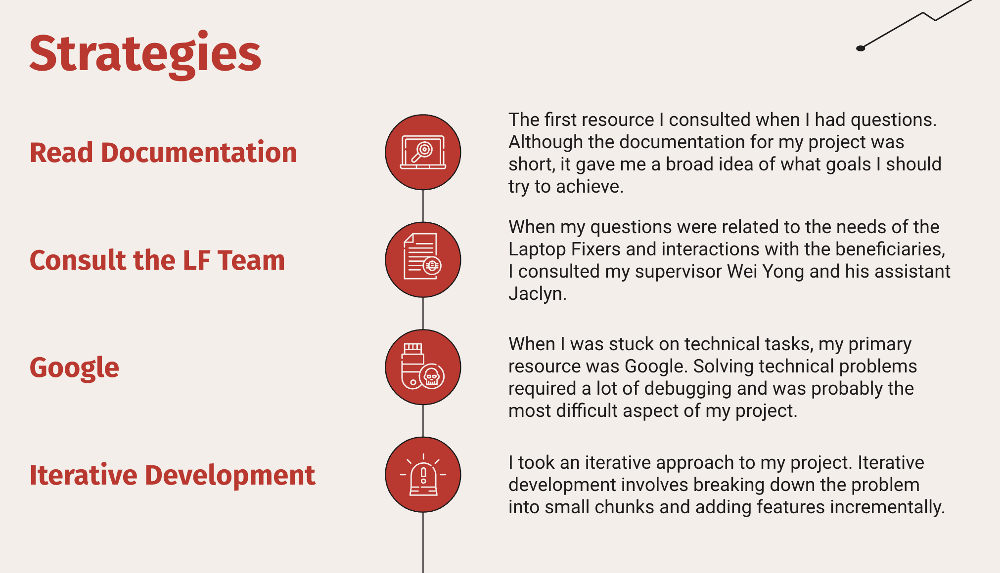
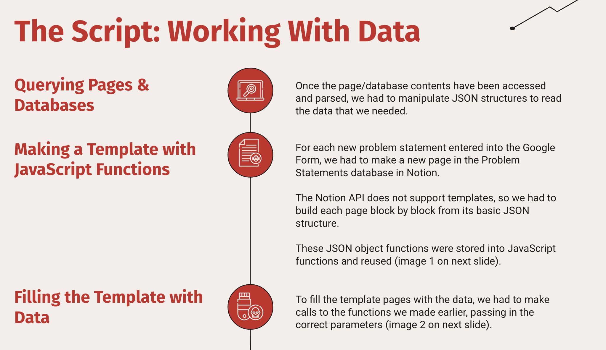
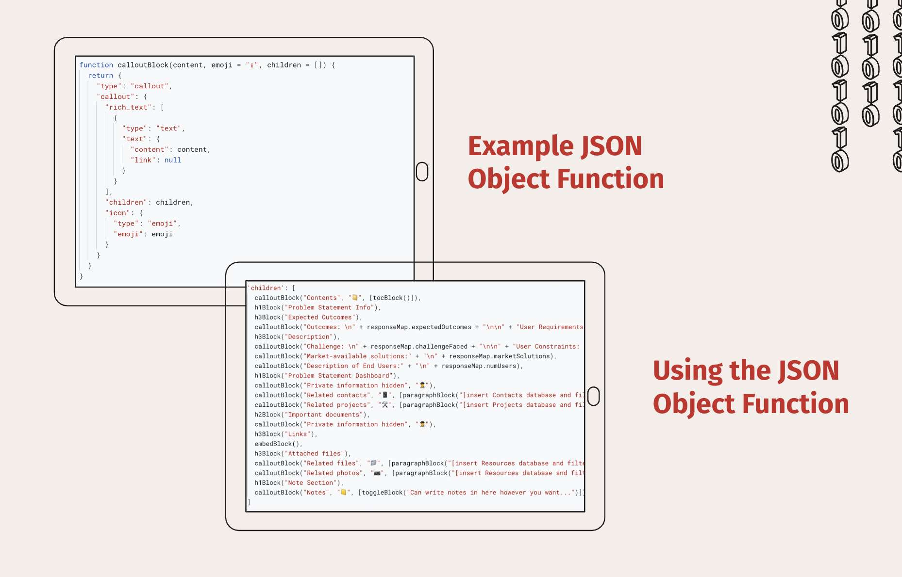
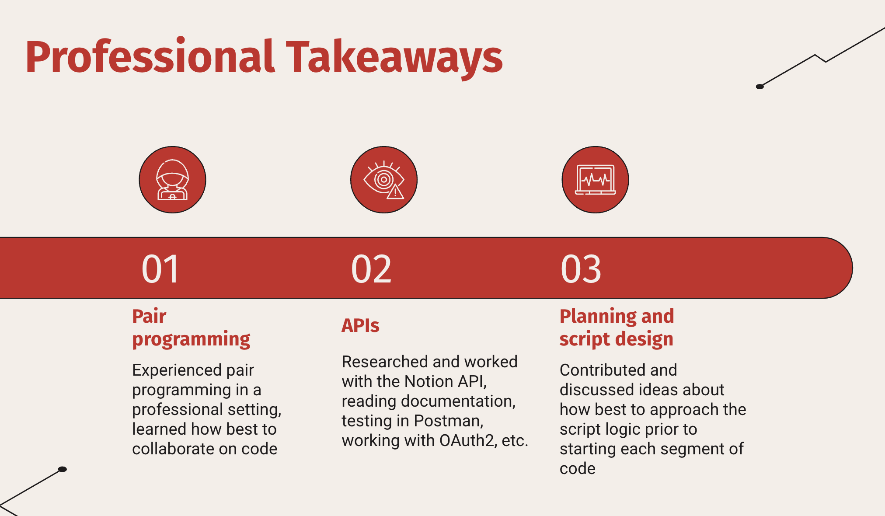

Singapore Projects.
PROJECT II.
OVERVIEW
This summer, I participated in an internship with Engineering Good (EG), a non-profit based in Singapore. I worked at their office in Singapore on two projects: a Service Allocation System for volunteers and automating their Notion database workflow. I worked closely with Engineering Good's Laptop Fixers Community team to design a system they could use to keep track of and allocate laptop service requests to their volunteers. After creating a new system for them to use, I worked with another intern to write automations for EG's Notion workflow using the Google and Notion API.
SKILLS INVOLVED
- ·JavaScript
- ·Google API
- ·Notion API
- ·Assistive Technology
- ·System Design
- ·Google Apps Script
PROJECT I: LAPTOP SERVICE SYSTEM
One initiative of Engineering Good (EG) is digital inclusion. Beneficiaries of Engineering Good can bring their faulty laptops in for troubleshooting at EG's Repair Clinics. The Laptop Fixers Community team needed a system that consolidates related data, automates processes, and integrates with EG's Notion workspace
The first part of the system I created was the Beneficiary Form. This Google Form is what is sent out to the beneficiaries. It collects information about the individual as well as the laptop(s) that they need fixed. This Google Form automatically populated an accompanying Google Sheet. Attached to this sheet was the JavaScript code that I wrote and hosted and Google Apps Script.
This script automates the adding of appointment slots to the Beneficiary Form, allows for the limiting of the number of people who can sign up for a single appointment, and automates email notifications.
After that, I focused on creating an accompanying Notion workspace. I will not go into much detail about how the workspace was organized, but if you wish to learn more, you can find my presentation on this project below (under Part 1).

The system I created improved the efficiency of the Laptop Fixers' workflow by digitizing their laptop service system (which used to be done on paper), consolidating all related data into one Notion workspace, automating processes (such as data entry and email notifications), and providing the Laptop Fixers with customization options. I also left EG with very thorough documentation on the project as well as a sandbox system that allows the Laptop Fixers to experiment with the workspace without breaking the original.
PROJECT II: AT Workspace Automation
Next I worked on automating the workflow of the Assistive Technlology department. I worked alongside another intern, Chris, who had previously organized the Assistive Technology's Notion workspace. This automation project benefitted the Engineering Good because it freed up Engineering Good's time, allowing them to work on other important tasks; removed room for error; and gave the EG workflow more structure and simplicity.
This script was also hosted on Google Apps Script and involved over 1000 lines of written JavaScript code. The main process we worked on automating was importing data from Google Forms to Notion. In this project, we worked heavily with the API for Google Forms as well as that for Notion.
Perhaps the most valuable skill we learned through this project was how to work with data. We had to use Google's API to read data from the Google Form, use JavaScript to reorganize this data, and make GET and POST requests to the Notion API in order to read and write data from databases.
After setting up this system for Engineering Good, we then moved on to setting up a script that imports data from an old database to a new database. To do so, we made a script using some code from our previous tasks and some new code. It was first capable of copying a single page property, then a page, then an entire database. This specific script only needed to be ran once, however our code was built to be reused to import other databases in the future. After, the 100 existing problem statements were successfully imported into the new workspace.
